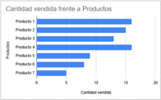
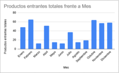
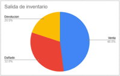
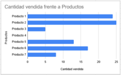
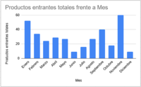
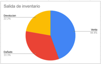

Panel de Ajuste y Análisis
Aquí puedes revisar información útil para tomar decisiones sobre tu inventario, detectar productos con movimientos inusuales o planificar reposiciones.
📦 Mantén el stock actualizado semanalmente. Esto garantiza que el sistema refleje la realidad del almacén y evita errores en la venta o reposición.
🧾 Revisa los reportes de entradas y salidas para detectar inconsistencias antes de hacer cualquier modificación manual.
Representaciones de metricas mes actual

Cantidad vendida frente a Productos.

Productos entrantes totales frente a Mes.

Salida de inventario.
Representaciones de metricas mes anterior

Cantidad vendida frente a Productos.

Productos entrantes totales frente a Mes.

Salida de inventario.